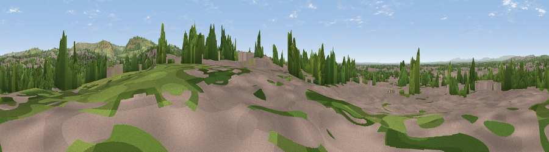

Viewpoint near Dukinfield
#24895 in England · top 50% of its area beats it · near DukinfieldWhere it is
The exact computed spot (SJ 94325 98025). Click the marker for map links.
The view, rendered

A 360° render of this exact spot computed from the terrain model, tree cover and land cover — summer colours, afternoon light, calibrated against photographs of famous viewpoints. Real trees, hedges and buildings will differ in detail.
The panorama
Grey silhouette: terrain skyline in each direction (720 bearings, Earth curvature and refraction included). Dashed green: skyline with trees (+15 m) and buildings (+8 m) as obstacles. Blue strip: how far the ground is visible on each bearing.
Where the view opens
Wedge length = distance to the farthest visible ground on that bearing (vegetation-aware). Rings at 10, 25 and 50 km.
What fills the view
53% built-up · 28% woodland · 19% grassland
Angular shares of the visible panorama (visual magnitude), not map area. Landscape diversity 0.45 (0–1 Shannon).
Key numbers
More beautiful places nearby
The staircase of upgrades: each row has a higher view potential than everything closer. Driving times are estimates from straight-line distance, calibrated against real road routing — check an actual route before setting out.
| Place | Direction | Drive | Score |
|---|---|---|---|
| Hough Hill | ESE · 3 km | ~6 min | 69.5 |
| Harrop Edge | ESE · 4 km | ~10 min | 74.6 |
| Wild Bank | E · 4 km | ~10 min | 76.2 |
| Viewpoint near Carrbrook | ENE · 5 km | ~11 min | 77.1 |
| Viewpoint near Edenfield | NNW · 24 km | ~39 min | 77.5 |
| White Brow | WNW · 32 km | ~49 min | 82.9 |
| Warton Crag | NNW · 87 km | ~112 min | 83.2 |
| Viewpoint near Little Wenlock | SSW · 95 km | ~119 min | 84.2 |
53.47892, -2.08698 · source: screening · position refined by local search. Computed location — check access rights before visiting.